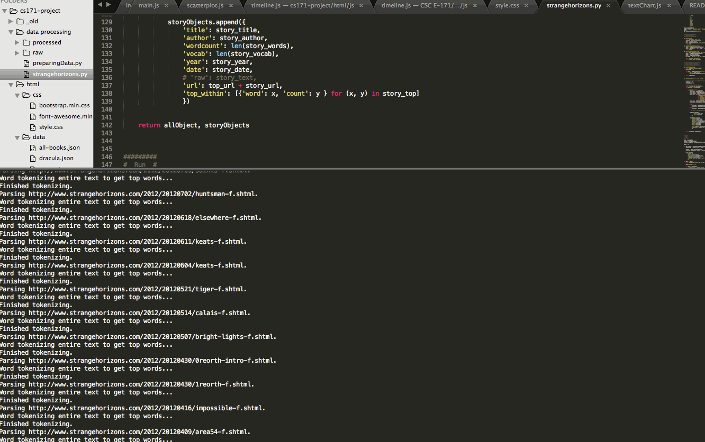

Table of Contents
- Background and motivation
- Inspiration: A great vis
- More inspiration: Narrative theory + machine learning
- Project objectives and goals
- Data
- Never mind: The big redesign
- Data 2.0
- An aside on theory
Background and motivation
The written word is one of our most important and rich sources of data; yet natural language analysis is a field mostly restrained to artificial intelligence and the digital humanities. Extending the tools of data visualization to natural language seems an especially interesting area to explore.
In terms of my personal background and motivation, my "day job" is international development, where we often work with household survey data from developing countries - running linear regressions, examining distributions, worrying about standard errors. It's very quantitative, very numerical. By night, I enjoy writing science fiction. Very wordy. This project provides me with a unique opportunity to use methods which normally take numerical data, and apply them to text.
Kurt Vonnegut, The Shape of Stories (excerpt)
Inspiration: A great vis
First, I was inspired by the OpenVis Conference 2015 video archive, which used an innovative visualization style to visualize all of the 2015 talks. Quickly, one could see the relative duration of the talks, how "dense" the talks are (or how long the words being used are), and how often certain words appeared. I fell in love with this visualization! My plan was to replicate and extend this idea.
More inspiration: Narrative theory + machine learning
Another related work was Kurt Vonnegut's lecture on "The Shape of Stories", and a data science project inspired by that lecture. In the lecture, Vonnegut says: "There's no reason why these simple shapes of stories can't be fed into computers." The data scientists at indico.io put this into action by applying sentiment analysis to Disney scripts, and then mapping those sentiments. The emerging "story shapes" were fascinating to see - especially since they resembled each other across films, indicating that there was a quantifiable "shape", at least to the Disney corpus.

Specific questions I wanted to answer were:
- Do certain types of texts (e.g. novels, academic articles) have predictable "shapes"?
- In a novel, can we visually tell - using a visualization of the text, rather than the text itself - when a character enters, exits, or dies?
- Can we see a writer's style visually? For example, how complex their prose is?
- Can a text corpus have a visual "gist"?
- Can we tell, from a visual gist, when an action scene is happening (short, abrupt sentences, lots of verbs) versus a scene setting description (long sentences, lots of adjectives)?
Longer term goals would be to extend this to visualizing languages, more broadly, by examining the length of words, the length and structure of sentences, grammatical rules, and so on. Something to make Chomsky proud!
Data
The original sources of data were:
- Project Gutenberg
- Academic journal articles scraped from the American Economic Review, Quarterly Journal of Economics, and Econometrica (thanks to another side-project I had at the time)
I started by focusing on a limited set of novels from Project Gutenberg. However, I intended to build something that would be easily adaptable to other texts.
I selected four 19th century novels as my initial text sources:
- Dracula, by Bram Stoker
- Frankenstein, by Mary Shelley
- Emma, by Jane Austen
- Moby Dick, by Herman Melville
Early designs


These four were selected because of their length (lots of data to visualize), their verbal complexity (high vocab counts), and their dual cross-cutting similarities (all 19th century, some genre overlap, gender balance) and differences (Moby Dick likely an outlier on a bunch of dimensions).
In Python, I used the Natural Language Toolkit (nltk) library to tokenize each text into words, sentences, and paragraphs; as well as to generate some basic descriptive statistics (for example, the size of the vocabulary). The objective was to create an array of book objects. Each book object would have top-level key-value pairs like title, author, top_words, vocab and wordcount. For example, for Emma:

The top word is "Mr."! Feminism despair.
In addition, each book object would have a key-value pair, text, which was a giant array of all the paragraphs, indexed and analyzed for their length.
Here, the first challenge arose: including both the text and its natural language meta-data ballooned the file size up to 31MB. There were a number of attempts to bring it down -
 -- by removing duplicated text, or by removing text entirely, so that the
-- by removing duplicated text, or by removing text entirely, so that the text array in each book object became just a series of indexes and lengths.


This seemed like a bummer, to be honest. What if users wanted to hover on any point in the viz and see the original text behind it? One compromise idea was to only keep sentences which had top words in them - allowing, at least, "top word sentences" to be displayed on hover. This didn't seem like a huge efficiency gain, though, since - by definition - many sentences would have top words in them.

Never mind: The big redesign
Following the CS171 individual vis exploration, the poster, and the expert evaluation, as well as achieving the first prototype of my original design, I decided to radically re-envision the project. While still concentrating on story shapes, I realized that visualizing paragraph lengths across 19th century novels was too similar to the immediate visual gist a user gets from looking at a text document itself. What additional value did my visualization provide?
Here are a series of the original designs, as they took shape:


Very boring.
The original four books visualized were simply too long and too intra-textually diverse for clear patterns to emerge. Users had to scroll for long periods over similar-looking terrain. It didn't seem to add much value beyond scrolling quickly through a text, as in a Word document or book.
I therefore decided to go back to first principles: Why was I interested in visualizing text? How can a text be visualized in a meaningful, insightful way? And, a more practical question: was trying to visualize a novel simply not going to work, because of its length? How could I find the visual patterns in the jumble of words?
An early redesign sketch

After several iterations, I decided to capture the same idea - the shape of stories - using a new design, and a new data source. (For more discussion on the data source, see Data 2.0 below). In this redesign, I would use the 700+ short stories available on Strange Horizons (one of my favorite online science fiction magazines) and analyze their complexity over time. Strange Horizons has published one story per week since September 2000 until today; that was a huge amount of data, and I had several ideas on how to visualize it.
In terms of user interaction, must haves were:
- On-hover tooltips of the story objects in each graph, with more information about each story: title, author, year, and top words.
- On-click hyperlinks of the story object to the stories themselves.
- On-hover or on-click focuses of each year object, which would illuminate the relevant stories in the scatter plot and line chart.
Nice to haves were:
- Radio buttons for users to adjust the reverse bar chart/heat chart such that story-rectangle height encodes for number of words.
- Sort button for users to sort year-columns in the bar chart according to years with most complexity, or most words written, or most stories (already visible).
- User search text box, where users can search for author names, titles, or any word which could appear in the text, and those stories are highlighted in all three visualizations. (This is a matter of finding an efficient solution to serving the data from the server; including story text for all 700+ stories in the JSON resulted in a large file size (18MB).)
- A "vanity" radio button, to highlight my own story in all three visualizations.
- On-hover tooltips include word clouds of top words.
- On-hover for each year also brings up a word cloud of top words for that year.

From the CS171 assignments of individual viz exploration, wherein I was tasked with researching text visualizations (hooray), I was struck by the "literature fingerprints" idea in Keim and Oelke (2007) - this clearly influenced my idea of a GitHub-style heat map encoding a text's complexity (in my case, the unique set of words, or vocab).
Data 2.0
Following my redesign, I needed to scrape all the stories available on Strange Horizons since its launch in September 2000. I followed the same process as above, using BeautifulSoup to parse the Strange Horizons website, and nltk to tokenize the text and calculate basic summary statistics. As with the original four novels in my first data scrape, I calculated the most popular words for each story, as well as for the year as a whole.

An aside: My pride and joy...

This time, I also got a bit fancier, and calculated the mean length of sentences, as well as the standard deviation of sentence length, for each story. The idea being that better writers vary their sentence lengths more. And those stories which had, for example, both high unique word count (vocab) and high sentence length standard deviation would be potentially very good! Of course, in the eye of the beholder, blah blah.

An aside on theory
Beyond my personal interest in narrative structures and writing (science) fiction, as well as my data analytics background, I didn't have any guidelines on what a meaningful natural language analysis looks like. In a way: this was great. It allowed me the space to think creatively about which quantities made the most sense. Essentially, what to count - and how to count it.
For example, when comparing the unique set of words in a story (vocab) across all stories, I realized I needed to normalize it: vocab_demeaned was born. vocab_demeaned was calculated by dividing the unique set of words in a story by the story's total wordcount - giving a value between 0 (words never vary) and 1 (words always vary). This already had interesting implications: low scores indicated repetitive writing, high scores indicated potentially esoteric writing (and, in science fiction, that usually means strange names! I expect there would be diminishing marginal returns to high vocab_demeaned - e.g. "Queen Zorbma"). I realized it had another interesting interpretation: it was the likelihood that, at any given point in the text, the next word would be a new one. Cool!
Another normalization issue came up when comparing sentence lengths. If I hypothesized that "good" writers varied their sentence lengths more, I needed to calculate the standard deviation of sentence lengths within stories. But how could I compare those standard deviations across stories? I would need to normalize that too: and thus, for each story, I divided the standard deviation by the average sentence length. (This reminded me of using percent change in standard deviations as a standardized way to compare effect sizes across impact evaluations - a work thing.)
Dividing the standard deviation of sentence lengths by the mean sentence length was, I later found out, something called the coefficient of variation.
OpenVis Conference 2016: Text visualization workshop
On Sunday, April 24, I was fortunate enough to attend the Text Analysis and Visualization workshop, hosted by Yannick Assogba (@tafsiri) and Jim Vallandingham (@vlandham).
stuff i thought about: - does the likelihood f using a new word in a text diminish over time? what is the rate of decreasing? - can i use tf-idf, or am i just going to see protagonists' names everywhere? show top 2 words! - how to deal with longer docs (divide by wordcount) - nltk.brown.corpus science_fiction!!!!!! - cosine distance of doc vectors - this amazing website: http://www.fastforwardlabs.com/luhn/ - an intuitive understanding of k-means clustering (YUSSSS)